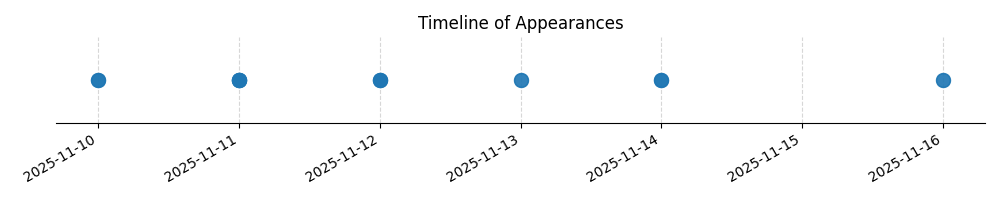

Kategorie: Letecké předpisy
Prostor třídy G se v České republice (a obecně podle většiny mezinárodních standardů) definuje jako vzdušný prostor s nepřetržitou letovou informační službou (FIS), který není klasifikován jako jiná třída vzdušného prostoru. Jeho vertikální hranice je v nižších výškách definována jako terén nebo nejvyšší překážka plus bezpečná výška, a ve vyšších výškách je definována jako určitá nadmořská výška. V kontextu otázky, která se ptá na výšku `mimo jiné`, je klíčové pochopit, že definice třídy G se vztahuje k výšce nad zemí (AGL - Above Ground Level). To znamená, že vzdušný prostor třídy G může sahat až do výšky 300 m nad povrchem země v určitých oblastech, kde není jiná klasifikace.

| Datum výskytu |
|---|
| 2025-11-16 |
| 2025-11-14 |
| 2025-11-13 |
| 2025-11-12 |
| 2025-11-11 |
| 2025-11-10 |